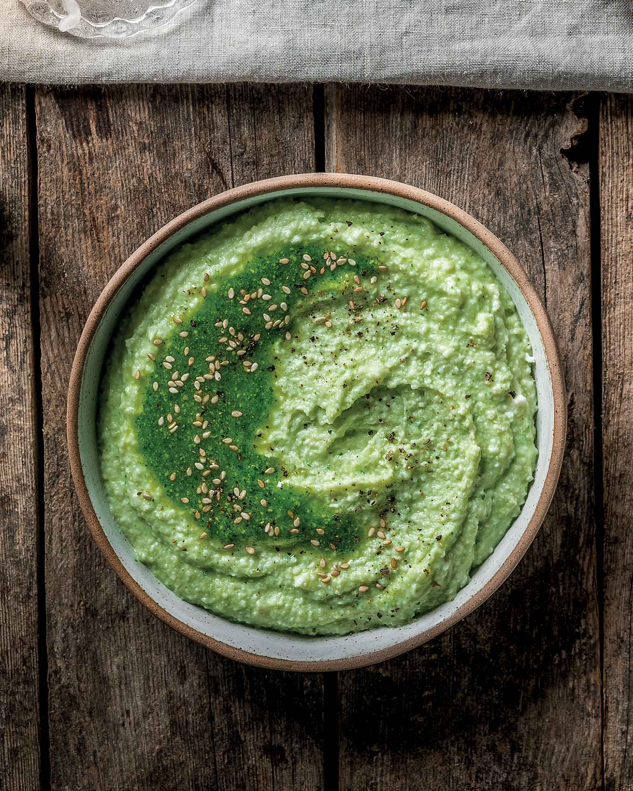

Πουρές με ψητές πατάτες και πέστο μυρωδικών

- Πλένουμε και βουρτσίζουμε 1 κιλό πατάτες (αντί για ξεφλούδισμα).
- Τις αλατίζουμε και τις τυλίγουμε σε αλουμινόχαρτο.
- Ψήνουμε στον φούρνο στους 180°C για 1 ώρα ή μέχρι να μαλακώσουν.
- Ξεφλουδίζουμε και λιώνουμε τις πατάτες σε κατσαρόλα.
- Προσθέτουμε 100 ml ελαιόλαδο, 70 γρ. πέστο μυρωδικών και αλατοπιπερώνουμε.
- Ανακατεύουμε καλά και σερβίρουμε.
 Spoon Theory
Spoon Theory